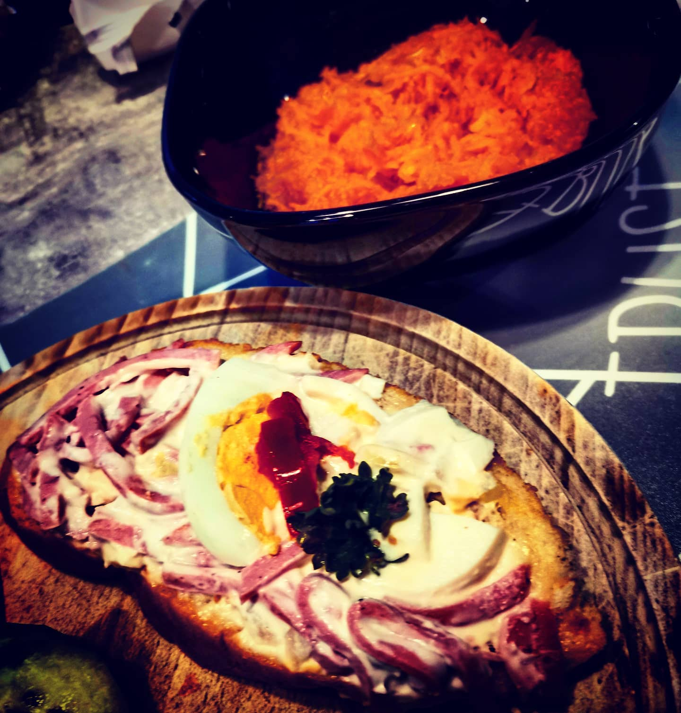

Mrkvový šalát podľa @walking_cookbook — Normy Jedál
Hermelinovy chlebiceka domaci mrkvovy salat.... Hresit se musi ✌️🤤
#vecere #vecerjemuj #hermelin #mrkvovysalat #mrkev #dobrouchut #jidlonataliri #jidlojezaklad #jidlo #jídlo #dnesvecerim #dnesjim #dnesjimnezdrave #dinner #todayieat #todaydinner #bonapetit #goodtaste #carrotsalad #foodbloggers #foodblogger #foodforlife #foodphotography #foodpic #foodblog #foodie #foodstagram #foodofinsta #fooddiary #foodgasm